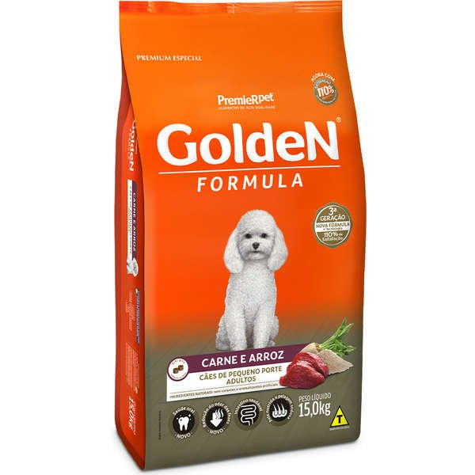
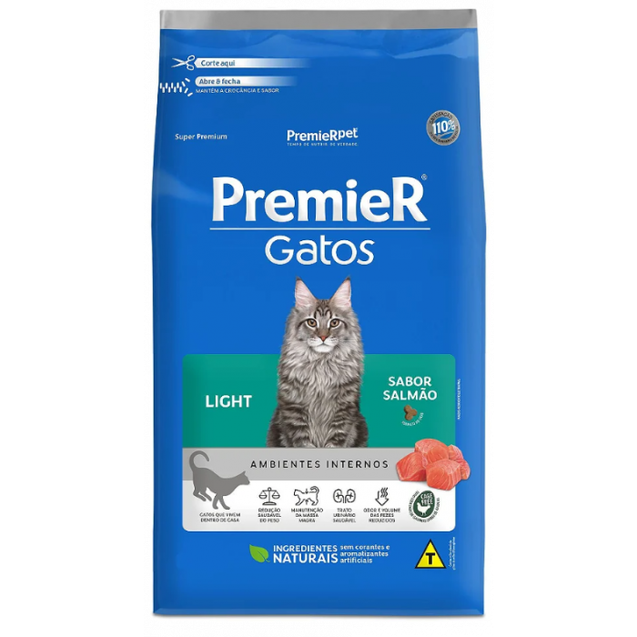
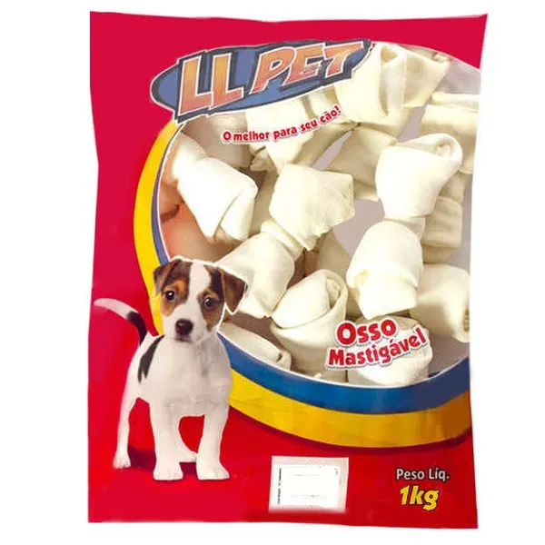
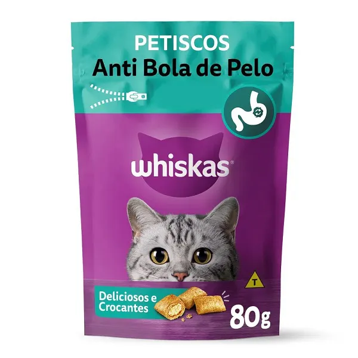
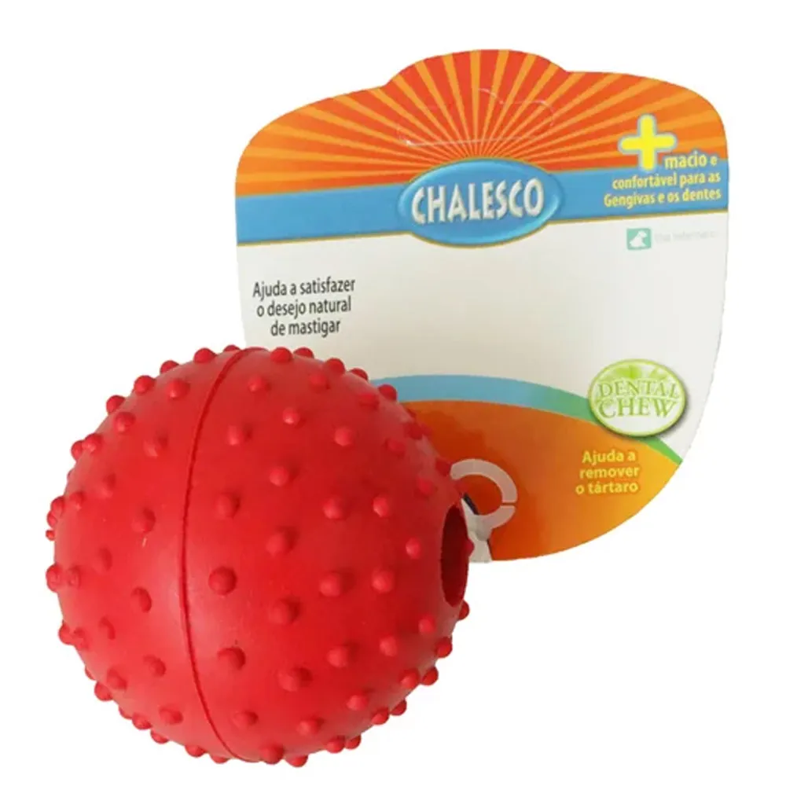
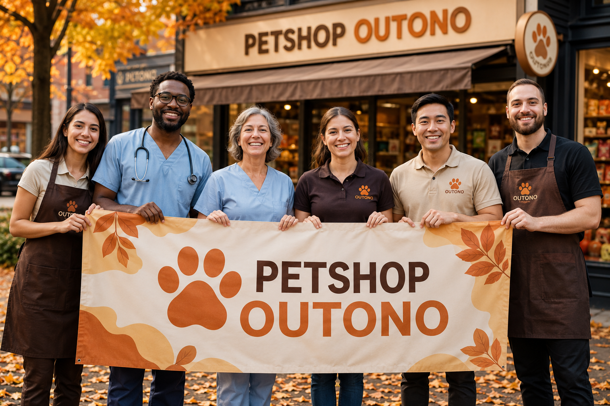

Um pouco sobre nosso petshop
Afinal, o que é o Petshop Outono?
O Petshop Outono nasceu com o objetivo de oferecer muito mais do que produtos e serviços para pets. Aqui, cada animal é tratado com carinho, respeito e atenção, garantindo uma experiência segura e acolhedora para tutores e seus companheiros. Trabalhamos com atendimento de qualidade, produtos selecionados e uma equipe dedicada ao bem-estar dos pets em cada etapa. Nosso compromisso é criar um ambiente onde os clientes encontrem tudo o que precisam, desde itens essenciais até serviços especializados, sempre priorizando a saúde, o conforto e a felicidade dos animais.
Mas então, por que nos escolher?
Escolher o Petshop Outono é optar por qualidade, confiança e cuidado. Buscamos oferecer um atendimento personalizado, ambiente confortável, produtos de marcas reconhecidas e serviços realizados com responsabilidade. Nosso compromisso é proporcionar a melhor experiência possível para você e seu pet, porque acreditamos que eles fazem parte da família. Além disso, estamos sempre em busca de melhorias, novidades e soluções que facilitem a rotina dos tutores, garantindo praticidade, segurança e um atendimento que faz a diferença em cada visita.
Quais nossos serviços?
Banho e tosa
Tosa higiênica
Tosa na máquina
Tosa na tesoura
Hidratação e tratamento de pelagem
Corte de unhas
Limpeza de ouvidos
Escovação dentária
Consultas veterinárias
Vacinação
Vermifugação
Hospedagem (hotel para pets)
Creche para pets (daycare)
Táxi pet (transporte do animal)
Venda de produtos
Quem nós atendemos?
Cães
Gatos
Coelhos
Hamsters
Pássaros
Porquinhos-da-índia
Produtos em destaque
Os melhores produtos para seu pet

Ração cachorro pequeno porte PREMIERPET (5kg)

Ração gato light PREMIER (1kg)

Ossinhos cachorro LLPET (10 un.)

Sachê gatos sabor frango WHISKAS (100g)

Petisco Biscrok PEDIGREE (500g)

Bolinha cachorros vermelha (1 un.)
Se interessou nessas promoções? Visite nossa unidade física em Floriánopolis-SC e descubra ainda mais produtos!
Conheça um pouco da nossa história
Nossa história
O Petshop Outono surgiu da paixão por animais e da vontade de oferecer um atendimento mais humano e acolhedor para os tutores. Tudo começou como uma pequena loja de bairro, criada por pessoas que acreditavam que cada pet merece cuidado, respeito e carinho em todas as etapas da vida. Com o passar dos anos, conquistamos a confiança da comunidade e ampliamos nossos serviços, sempre mantendo o compromisso de oferecer qualidade, segurança e dedicação em cada atendimento.
Nossa missão
Nossa missão é proporcionar bem-estar aos animais e tranquilidade aos seus tutores, oferecendo produtos de qualidade, atendimento personalizado e serviços realizados por profissionais capacitados. Buscamos criar um ambiente onde cada cliente se sinta bem recebido e encontre tudo o que precisa para garantir uma vida mais saudável, feliz e confortável ao seu companheiro.
Nossa equipe
Nossa equipe é formada por profissionais apaixonados pelo universo pet, que trabalham diariamente para oferecer um atendimento responsável, atencioso e transparente. Cada colaborador é treinado para compreender as necessidades dos animais e orientar seus tutores da melhor forma possível, sempre prezando pelo respeito, pela ética e pelo bem-estar de cada pet que passa pelo Petshop Outono.

Fale com a gente
Nossos contatos
Rua das Flores, 123 - Florianópolis, SC
(48) 99999-9999
contato@petshopoutono.com.br
Seg a Sáb, das 8h às 18h